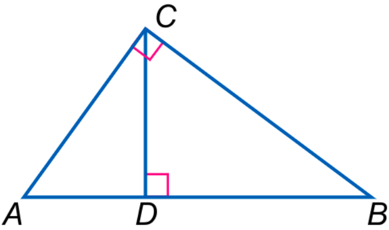
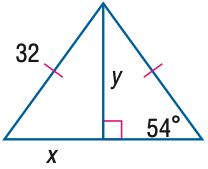
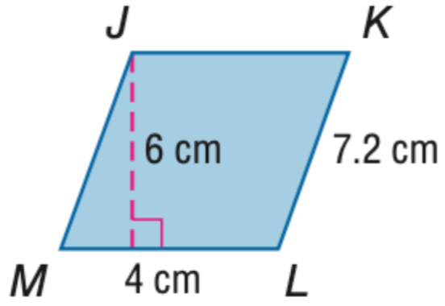
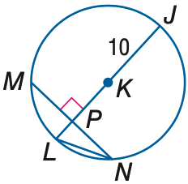

Inter-GPS
Inter-GPS
Geometry problem solving has attracted much attention in the NLP community recently. The task is challenging as it requires abstract problem understanding and symbolic reasoning with axiomatic knowledge. However, current datasets are either small in scale or not publicly available. Thus, we construct a new large-scale benchmark, Geometry3K, consisting of 3,002 geometry problems with dense annotation in formal language. We further propose a novel geometry solving approach with formal language and symbolic reasoning, called Interpretable Geometry Problem Solver (Inter-GPS). Inter-GPS first parses the problem text and diagram into formal language automatically via rule-based text parsing and neural object detecting, respectively. Unlike implicit learning in existing methods, Inter-GPS incorporates theorem knowledge as conditional rules and performs symbolic reasoning step by step. A theorem predictor is also designed to infer the theorem application sequence fed to the symbolic solver for the more efficient and reasonable searching path. Extensive experiments on the Geometry3K and GEOS datasets demonstrate Inter-GPS achieves significant improvements over existing methods.
Pan Lu*, Ran Gong*, Shibiao Jiang*, Liang Qiu, Siyuan Huang, Xiaodan Liang, Song-Chun Zhu
The 59th Annual Meeting of the Association for Computational Linguistics (ACL), 2021
Paper /
PDF /
Supplementary /
Code
Four data examples in the Geometry3K dataset are shown below:
| Problem Text | Diagram | Choices | Text Literals | Diagram Literals |
|---|---|---|---|---|
| In triangle ABC, AD = 3 and BD= 14. Find CD. |  |
A. 6.0 B. 6.5 C. 7.0 D. 8.5 Answer: B |
Triangle(A,B,C) Equals(LengthOf(Line(A,D)),3) Equals(LengthOf(Line(B,D)),14) Find(LengthOf(Line(C,D)) |
Triangle(A,B,C) Triangle(A,C,D) Triangle(B,C,D) PointLiesOnLine(D,Line(A,B)) Perpendicular(Line(A,C),Line(B,C)) Perpendicular(Line(C,D),Line(A,B) |
| Find y. Round to the nearest tenth. |  |
A. 18.8 B. 23.2 C. 25.9 D. 44.0 Answer: C |
Find(y) |
Equals(LengthOf(Line(A,B)),32) Equals(LengthOf(Line(B,D)),y) Equals(MeasureOf(Angle(A,C,B)),54) Equals(LengthOf(Line(A,D)),x) PointLiesOnLine(D,Line(A,C)) Perpendicular(Line(B,D),Line(C,D)) Equals(LengthOf(Line(A,B)),LengthOf(Line(B,C))) |
| Find the perimeter of $\parallelogram$ JKLM. |  |
A. 11.2 B. 22.4 C. 24 D. 44.8 Answer: B |
Find(PerimeterOf(Parallelogram(J, K,L,M))) |
Equals(LengthOf(Line(L,K)),7.2) Equals(LengthOf(Line(M,L)),4) Equals(LengthOf(Line(E,J)),6) PointLiesOnLine(E,Line(M,L)) Perpendicular(Line(J,E),Line(E,L)) |
| In $\odot$ K, MN = 16 and m $\widehat$ MN = 98. Find the measure of LN. Round to the nearest hundredth. |  |
A. 6.93 B. 7.50 C. 8.94 D. 10.00 Answer: C |
Circle(K) Equals(LengthOf(Line(M,N)),16) Equals(MeasureOf(Arc(M,N)),98) Find(LengthOf(Line(L,N))) |
Equals(LengthOf(Line(J,K)),10) Perpendicular(Line(P,K),Line(M,P)) PointLiesOnLine(P,Line(M,N)) PointLiesOnLine(P,Line(L,J)) PointLiesOnLine(P,Line(L,K)) PointLiesOnLine(K,Line(P,J)) PointLiesOnLine(K,Line(L,J)) PointLiesOnCircle(M,Circle(K)) PointLiesOnCircle(J,Circle(K)) PointLiesOnCircle(N,Circle(K)) PointLiesOnCircle(L,Circle(K)) |
The complete dataset will be released soon.
View on GitHub.
If the paper or the dataset inspires you, please cite us:
@inproceedings{lu2021inter,
title = {Inter-GPS: Interpretable Geometry Problem Solving with Formal Language and Symbolic Reasoning},
author = {Lu, Pan and Gong, Ran and Jiang, Shibiao and Qiu, Liang and Huang, Siyuan and Liang, Xiaodan and Zhu, Song-Chun},
booktitle = {The 59th Annual Meeting of the Association for Computational Linguistics (ACL)},
year = {2021}
}
1Center for Vision, Cognition, Learning, and Autonomy (VCLA), UCLA
2College of Computer Science and Technology, Zhejiang University
3School of Intelligent Systems Engineering, Sun Yat-sen University
Questions about geometry problem solving, or want to get in touch? Contact Pan Lu at my contact page, or open up a pull request or issue on Github.